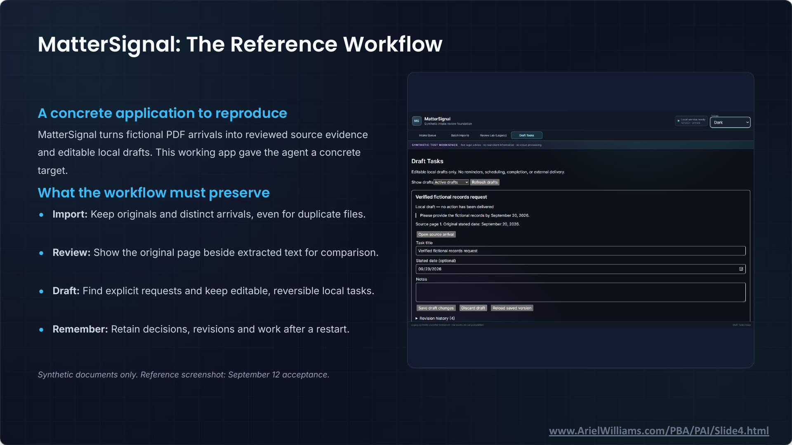

It Works: Agentic Coding and Legal Technology · Slide 4 of 12
MatterSignal: The Reference Workflow
Slide snapshot captured · Ariel Williams


Text transcript
A concrete application to reproduce
MatterSignal turns fictional PDF arrivals into reviewed source evidence and editable local drafts. This working app gave the agent a concrete target.
What the workflow must preserve
- Import: Keep originals and distinct arrivals, even for duplicate files.
- Review: Show the original page beside extracted text for comparison.
- Draft: Find explicit requests and keep editable, reversible local tasks.
- Remember: Retain decisions, revisions and work after a restart.
Synthetic documents only. Reference screenshot: September 12 acceptance.
Reference application screenshot
MatterSignal — Synthetic intake review foundation
Local service ready. 127.0.0.1 · private. THEME: Dark.
SYNTHETIC TEST WORKSPACE. Not legal advice · no real client information · no cloud processing
Draft Tasks
Editable local drafts only. No reminders, scheduling, completion, or external delivery.
Show drafts: Active drafts. Refresh drafts.
Verified fictional records request
Local draft — no action has been delivered
Please provide the fictional records by September 20, 2026.
Source page 1. Original stated date: September 20, 2026.
Open source arrival
Task title: Verified fictional records request
Stated date (optional): 09/23/2026
Notes: empty
Save draft changes. Discard draft. Reload saved version.
Revision history (4)
Legacy synthetic classifier test bench - raw scores are not probabilities
Draft Tasks ready
- Intake Queue
- Batch Imports
- Review Lab (Legacy)
- Draft Tasks
Slide footer: www.ArielWilliams.com/PBA/PAI/Slide4.html